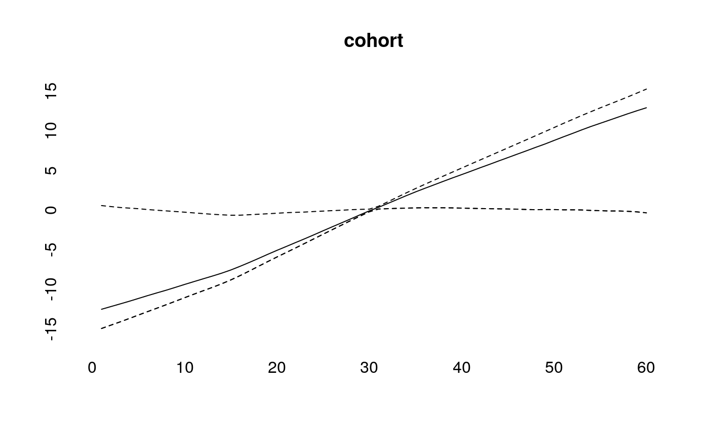
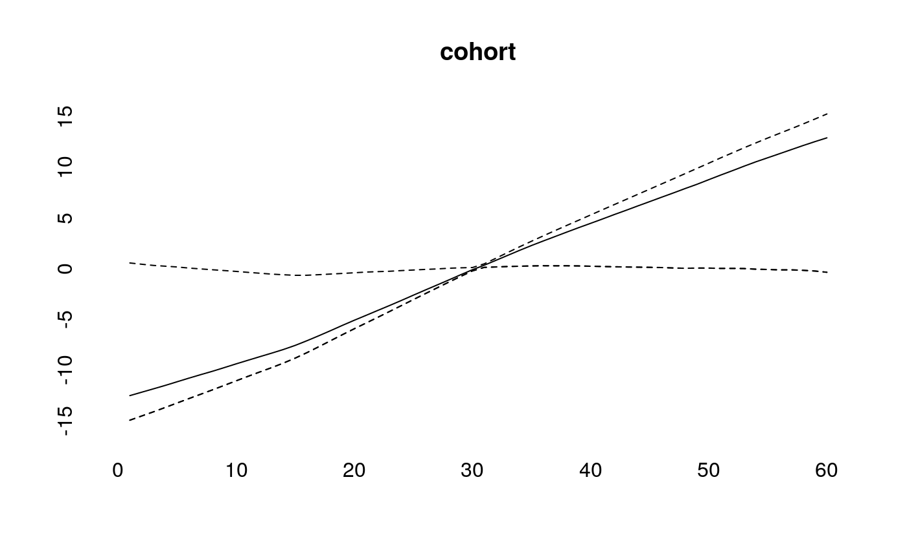

Simulating Age-Period-Cohort Data
Volker Schmid
2019-01-07
simulation.Rmd

periods_per_agegroup=5
number_of_cohorts <- periods_per_agegroup*(10-1)+15
cohort<-rep(0,60)
cohort[1:15]<-(14:0)
cohort[16:30]<- (1:15)/2
cohort[31:60]<- 8
cohort<-cohort/10
cohort<-cohort-mean(cohort)
plot(cohort, type="l")
simdata<-apcSimulate(-10, age, period, cohort, periods_per_agegroup, 1e6)
print(simdata$cases)## [,1] [,2] [,3] [,4] [,5] [,6] [,7] [,8] [,9] [,10]
## [1,] 0 5 29 47 88 109 150 411 1142 2964
## [2,] 2 4 19 44 68 89 133 301 869 2225
## [3,] 1 4 17 30 57 99 108 234 615 1641
## [4,] 3 4 12 25 56 91 101 160 475 1241
## [5,] 0 1 11 19 50 62 103 115 343 943
## [6,] 0 0 11 23 37 58 69 116 262 669
## [7,] 2 3 10 13 33 51 94 109 223 538
## [8,] 1 3 4 10 21 27 59 77 138 388
## [9,] 1 2 4 18 26 50 73 88 144 413
## [10,] 0 1 9 17 38 69 97 103 192 480
## [11,] 0 4 8 15 42 90 125 176 225 482
## [12,] 1 6 7 30 57 104 171 222 253 563
## [13,] 2 7 18 32 80 140 184 261 387 641
## [14,] 0 8 26 34 91 168 289 338 467 665
## [15,] 2 9 18 56 92 167 337 451 605 759simmod <- bamp(cases = simdata$cases, population = simdata$population, age = "rw1",
period = "rw1", cohort = "rw1", periods_per_agegroup =periods_per_agegroup)print(simmod)##
## Model:
## age (rw1) - period (rw1) - cohort (rw1) model
## Deviance: 148.25
## pD: 49.12
## DIC: 197.37
##
##
## Hyper parameters: 5% 50% 95%
## age 0.663 1.559 3.110
## period 12.718 25.295 43.929
## cohort 77.776 125.408 191.272checkConvergence(simmod)## [1] TRUEplot(simmod)

effects<-effects(simmod)
effects2<-effects(simmod, mean=TRUE)
#par(mfrow=c(3,1))
plot(age, type="l")
lines(effects$age, col="blue")
lines(effects2$age, col="green")


prediction<-predict_apc(simmod, periods=5, population=array(1e6,c(20,10)))plot(prediction$cases_period[2,], ylim=range(prediction$cases_period),ylab="",pch=19)
points(prediction$cases_period[1,],pch="–",cex=2)
points(prediction$cases_period[3,],pch="–",cex=2)
for (i in 1:20)lines(rep(i,3),prediction$cases_period[,i])
plot(prediction$period[2,])simmodrw2 <- bamp(cases = simdata$cases, population = simdata$population, age = "rw2",
period = "rw2", cohort = "rw2", periods_per_agegroup =periods_per_agegroup)print(simmodrw2)##
## Model:
## age (rw2) - period (rw2) - cohort (rw2) model
## Deviance: 156.61
## pD: 30.49
## DIC: 187.09
##
##
## Hyper parameters: 5% 50% 95%
## age 23.302 84.338 268.758
## period 38.483 89.744 202.236
## cohort 797.723 1638.114 3150.320checkConvergence(simmodrw2)## Warning: MCMC chains did not converge!## [1] FALSEplot(simmodrw2)
 

cov_p<-rnorm(15,period,.1)simmod2 <- bamp(cases = simdata$cases, population = simdata$population, age = "rw1",
period = "rw1", cohort = "rw1", periods_per_agegroup =periods_per_agegroup,
period_covariate = cov_p)